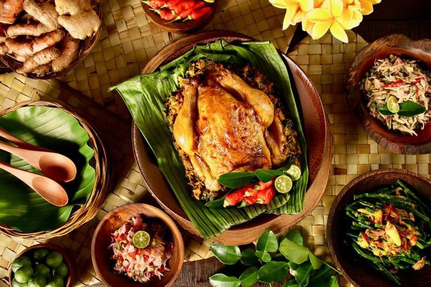

CAyam Betutu adalah makanan tradisional khas Bali yang terbuat dari ayam atau bebek utuh yang berisi bumbu, kemudian dipanggang dalam api sekam. Ayam betutu merupakan jenis lauk pauk yang dibuat dari daging ayam yang telah dibersihkan, kemudian dibalurkan bumbu khas Bali yang dikenal dengan "base genep" di seluruh permukaan daging ayam dan sebagian lagi dimasukkan ke dalam rongga abdomennya. Nama Betutu sendiri berasal dari kata be dan tunu, Be artinya daging, dan tunu artinya bakar. Jadi secara harfiah adalah daging yang dibakar. Sementara itu, pengolahan betutu sendiri khas dengan diberi lapisan pembungkus daun pinang, lalu diberi bara sekam. Kemudian dimasukan ke dalam tanah dari batu-batu yang sudah dipanaskan. Cara pengolahan ini merupakan warisan dari masa Majapahit yaitu masa abad ke-16, ketika pengaruh Islam masuk ke tanah Jawa. Setelah itu, diketahui banyak orang Majapahit yang merupakan pemeluk Hindu akhirnya pergi wilayah Bali.
Bahan
1 Ekor atau 1 Kg ayam utuh
3 Batang serai
4 Lembar daun salam
1 Liter air
Bumbu :
15 Butir bawang merah
7 Siung bawang merah
2 Buah cabai besar
13 Buah cabai merah keriting
4 Buah kemiri
3 Cm kunyit
3 Cm jahe
3 Cm lengkuas
3 Cm kencur
1 Sendok teh merica utuh
1 Sendok teh ketumbar
1 Sendok tehh garam
10 Gram gula merah
1 Sendok teh terasi
Bahan Pelengkap
Sayuran rebus
Kacang tanah goreng
Sambal matah